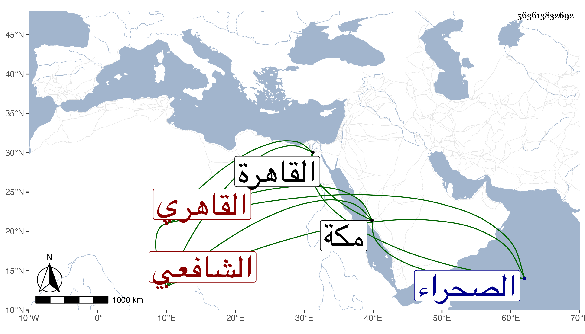

0902Sakhawi.DawLamic.ITO20230111-ara1.EIS1600.563613832692
Biography ID: 563613832692
318
عبد الملك بن عبد اللطيف بن شاكر بن ماجد بن عبد الوهاب بن يعقوب المجد بن التاج بن العلم القاهري الشافعي ويعرف كسلفه بابن الجيعان . ولد في سنة اثنتين وتسعين بالقاهرة ونشأ بها فحفظ القرآن والأربعين النووية وعرضها على البلقيني وولده والدميري والشمسين والعراقي والبكري المالكي ، وحج مع والده في موسم سنة خمس وثمانمائة وجاور بمكة التي تليها ، سمع بها على ابن صديق الصحيح وأربعي النووي وأجاز له الزين المراغي وعائشة ابنة ابن عبد الهادي والمجد اللغوي ولازم البساطي في المطول بقراءة أبي البركات الغراقي بل أخذ عنه المقامات وكذا أخذها عن شيخنا ولما مر قوله :
| عليك بالصدق ولو أنه | أحرقك الصدق بنار الوعيد |
| وابغ رضى المولى فأغبى الورى | من أسخط المولى وأرضى العبيد |
قال شيخنا : لو كانت القافية بنار السعير كيف كان البيت الثاني فقال المجد بديهة :
| وابغ رضى المولى فأذكى الورى | من أسخط العبد وأرضى الأمير |
ولازم البدر البشتكي في فن الأدب أيضا حتى برع فيه وهو المعين بعد موته في جمع نظمه وكذا صحب غيره من أهل الفن وذكر بالكرم وحسن العشرة وكثرة التودد والفضيلة خصوصا في الأدب ، أجاز لنا غير مرة وكان أحد كتاب الإسطبلات ومباشر أوقاف الحرمين عند الزمام والناصريتين بالصحراء وباب زويلة وحصل له فالج دام به تسع سنين وعالجه فلم ينجع حتى مات في سابع عشري رمضان سنة ست وخمسين عفا الله عنه وإيانا واستقر في جهاته بعده ابناه عبد اللطيف وأبو البقاء .
